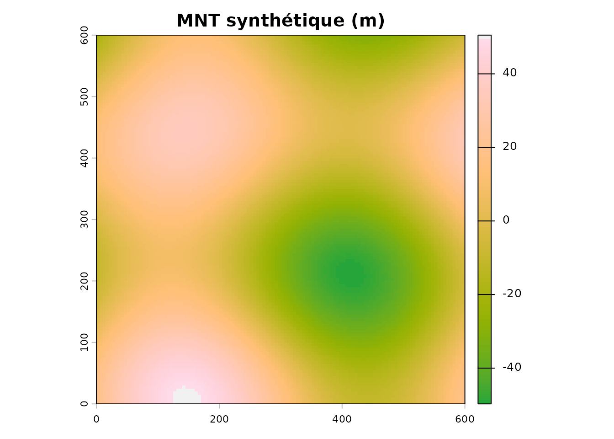
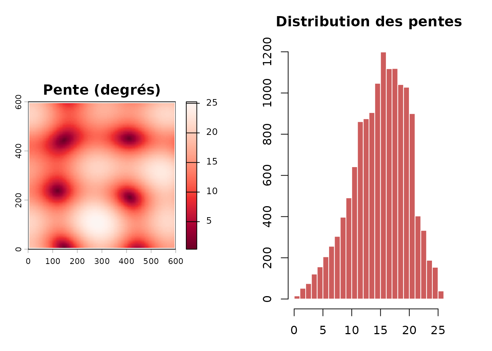
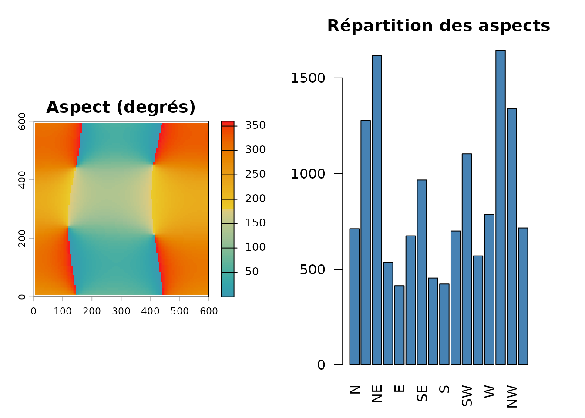
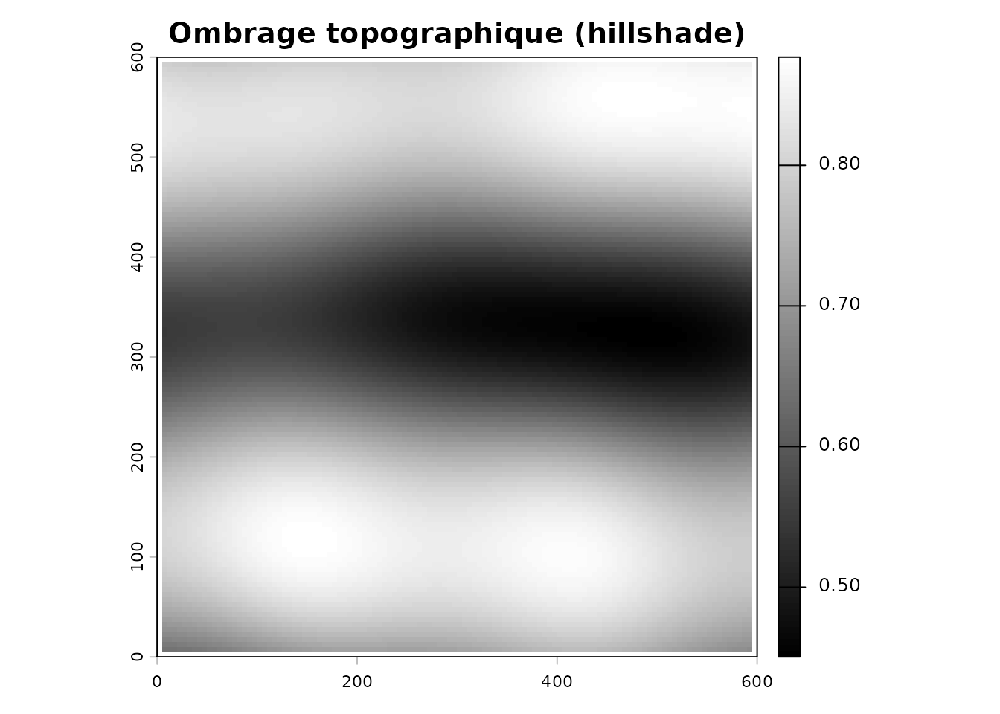
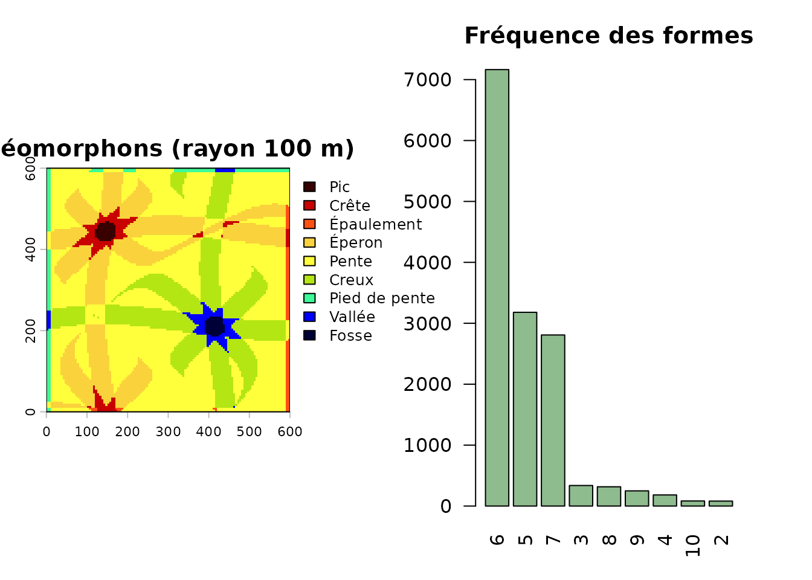
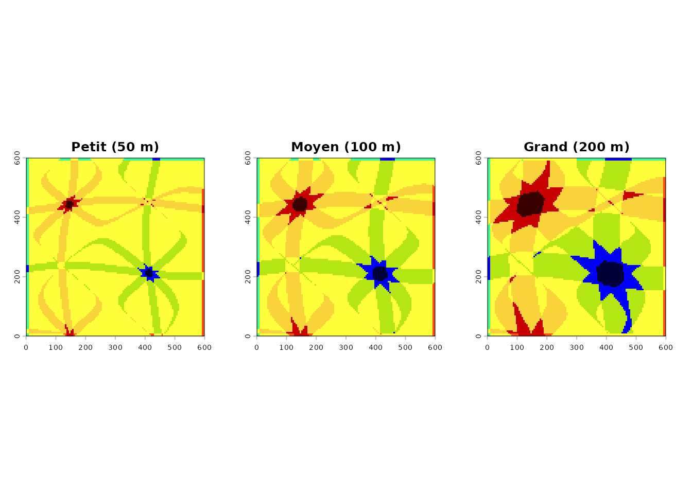

Objectif
Ce guide montre comment dériver les covariables de relief — pente, aspect, ombrage topographique (hillshade) et géomorphons — à partir d’un modèle numérique de terrain (MNT).
Pour rester reproductible, tout est calculé sur un MNT synthétique. La dernière section montre le même flux à partir de données LiDAR réelles.
Un MNT d’exemple
On fabrique une colline douce de 600 m × 600 m (résolution 5 m) :
set.seed(1)
mnt <- terra::rast(nrows = 120, ncols = 120,
xmin = 0, xmax = 600, ymin = 0, ymax = 600,
crs = "EPSG:32618")
xy <- terra::xyFromCell(mnt, 1:terra::ncell(mnt))
terra::values(mnt) <- 25 * sin(xy[, 1] / 90) +
18 * cos(xy[, 2] / 70) +
8 * sin((xy[, 1] + xy[, 2]) / 120)
names(mnt) <- "elevation"
terra::plot(mnt, col = hcl.colors(100, "Terrain"), main = "MNT synthétique (m)")
Pente
pente <- calculer_pente(mnt)
par(mfrow = c(1, 2), mar = c(3, 3, 3, 3))
terra::plot(pente, col = hcl.colors(100, "Reds"),
main = "Pente (degrés)")
hist(terra::values(pente), breaks = 30, col = "indianred",
border = "white", main = "Distribution des pentes",
xlab = "Pente (degrés)")
Aspect
L’aspect indique la direction de la pente (0° = Nord, 90° = Est, 180°
= Sud, 270° = Ouest). Les zones plates ressortent en
NA.
aspect <- calculer_aspect(mnt)
par(mfrow = c(1, 2), mar = c(3, 3, 3, 3))
terra::plot(aspect, col = hcl.colors(100, "Zissou"),
main = "Aspect (degrés)")
# Rose des orientations
a <- terra::values(aspect); a <- a[!is.na(a)]
rose <- hist(a, breaks = seq(0, 360, by = 22.5), plot = FALSE)
barplot(rose$counts, names.arg = c("N", "NNE", "NE", "ENE", "E", "ESE", "SE",
"SSE", "S", "SSW", "SW", "WSW", "W", "WNW",
"NW", "NNW"),
col = "steelblue", las = 2, main = "Répartition des aspects",
ylab = "Nombre de cellules")
Hillshade
Le hillshade combine pente et aspect pour un rendu 3D du relief.
hs <- terra::shade(slope = pente * pi / 180, aspect = aspect * pi / 180)
terra::plot(hs, col = grey(0:100 / 100), main = "Ombrage topographique (hillshade)")
Géomorphons
Les géomorphons classent 10 formes de terrain (crêtes, vallées,
pentes…). Le paramètre search_radius fixe l’échelle
d’analyse (en mètres).
geom <- calculer_geomorphons(mnt, search_radius = 100, flatness_threshold = 1)
par(mfrow = c(1, 2), mar = c(3, 3, 3, 3))
terra::plot(geom, main = "Géomorphons (rayon 100 m)")
barplot(sort(table(terra::values(geom)), decreasing = TRUE),
col = "darkseagreen", las = 2, main = "Fréquence des formes",
ylab = "Nombre de cellules")
Si rgeomorphon n’est pas installé, installez-le avec
remotes::install_github("brownag/rgeomorphon").
Échelles multiples
geom_ms <- calculer_geomorphons(mnt, multi_scale = TRUE)
par(mfrow = c(1, 3), mar = c(2, 2, 3, 2))
terra::plot(geom_ms$petit, main = "Petit (50 m)", legend = FALSE)
terra::plot(geom_ms$moyen, main = "Moyen (100 m)", legend = FALSE)
terra::plot(geom_ms$grand, main = "Grand (200 m)", legend = FALSE)
Avec des données LiDAR réelles
En pratique, le MNT provient du LiDAR. Le flux complet se résume à :
champ <- st_read("mon_champ.shp")
# Vérifier les années disponibles
verifier_disponibilite_lidar(champ)
# Télécharger le MNT et calculer toutes les covariables
covariables <- extraire_covariables_terrain(
polygone = champ,
search_radius = 100,
dossier = "output" # sauvegarde optionnelle des rasters
)
terra::plot(covariables$mnt, main = "MNT")
terra::plot(covariables$pente, main = "Pente")
terra::plot(covariables$aspect, main = "Aspect")
terra::plot(covariables$geomorphons$moyen, main = "Géomorphons")Les données LiDAR proviennent du DataCube du Canada via l’API STAC.
À retenir
| Fonction | Covariable |
|---|---|
calculer_pente() |
Pente (degrés) |
calculer_aspect() |
Aspect (degrés) |
calculer_geomorphons() |
Formes de terrain (10 classes) |
extraire_covariables_terrain() |
Les trois en une commande + MNT |
Pour approfondir l’interprétation du relief, voir l’article Analyse topographique.